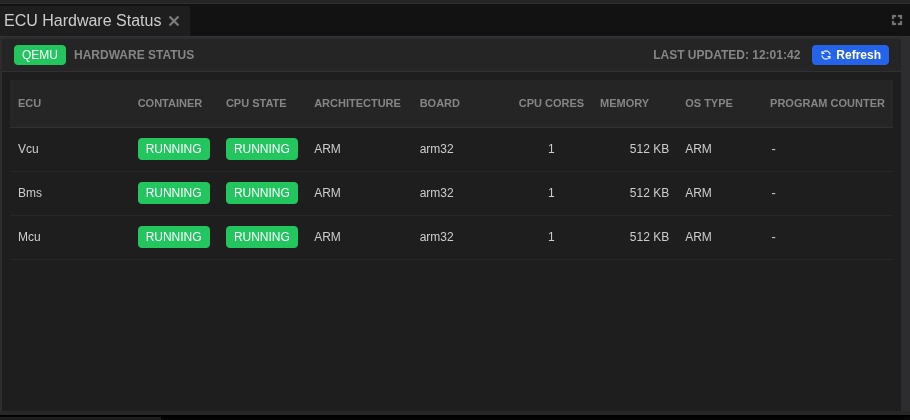
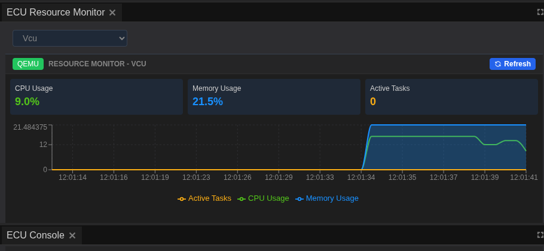
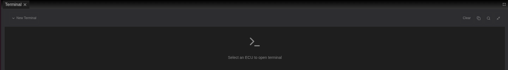

ECU Monitoring Walkthrough¶
This comprehensive tutorial guides you through monitoring, analyzing, and debugging running ECU systems in TrueFidelity Desktop. You'll master the monitoring panels, learn to identify performance issues, access diagnostic tools, and export data for analysis. Whether you're tracking real-time performance, debugging issues, or conducting long-term analysis, this tutorial provides the essential monitoring skills.
Overview¶
Goal: Master TrueFidelity's monitoring capabilities to track ECU performance, diagnose issues in real-time, analyze network traffic, access terminal debugging tools, and export comprehensive diagnostic data for reporting and analysis.
What You'll Learn:
- Setting up optimal monitoring layouts for different scenarios
- Understanding ECU status indicators and health metrics
- Filtering and analyzing console logs effectively
- Tracking resource usage and identifying performance issues
- Monitoring CAN network traffic and message patterns
- Using terminal access for advanced debugging
- Exporting and correlating monitoring data
- Troubleshooting common issues using monitoring tools
Time estimate: 20-25 minutes for complete walkthrough
Prerequisites:
- TrueFidelity Desktop installed and license activated
- A running ECU system (or complete the System Design Workflow tutorial first)
- Basic understanding of system monitoring concepts
- Docker Desktop running (for real container monitoring) or mock mode
Mock Mode vs Real Docker
This tutorial works with both mock data (for learning) and real Docker containers. In mock mode, data is simulated but the monitoring principles and techniques remain the same. The interface and tools function identically in both modes.
Step 1: Set Up Monitoring Layout¶
TrueFidelity provides predefined layouts optimized for different workflows. Let's set up the ideal monitoring environment for tracking running ECUs.
Understanding Layout Modes¶
TrueFidelity offers three primary layout modes:
- System Design Mode: Focus on canvas and properties for building topologies
- Monitoring Mode: Optimized for runtime monitoring with status and resource panels
- CAN Log Analysis Mode: Specialized for network traffic and signal analysis
Switch to Monitoring Mode¶
- Open the View menu from the menu bar
- Click View → Layouts → Monitoring
-
The workspace reorganizes automatically for monitoring tasks
-
Verify essential panels are visible:
-
ECU Hardware Status: Bottom panel showing all ECU states
- ECU Console: Log streaming panel for runtime messages
- ECU Resource Monitor: Real-time CPU and memory graphs
- ECU Task Monitor: Process and thread information
-
Terminal: Shell access panel (dropdown-based)
-
Arrange panels for your workflow:
-
Drag panel tabs to reposition them
- Resize panels by dragging the divider lines between them
- Create tab groups by dragging one panel onto another
- Dock panels to edges by dragging to the blue drop zones
Customize Your Layout¶
-
Optimize panel sizes based on priority:
-
Make Console larger if focusing on logs
- Expand Resource Monitor for performance analysis
-
Minimize panels you don't need immediately
-
Save your custom layout:
-
Click View → Save Layout As...
- Name it descriptively (e.g., "My Monitoring Setup")
- Access it later from View → Layouts → [Your Layout Name]
Layout Best Practices
- Performance Monitoring: Maximize Resource Monitor and Task Monitor
- Debugging: Focus on Console and Terminal panels
- Network Analysis: Prioritize Network Traffic and Signal Viewer
- Overview: Balance all panels equally for general monitoring
Panel Shortcuts
While some panels have keyboard shortcuts, the most reliable way to access panels is through the View menu. Panel visibility can also be toggled from the toolbar panel buttons when available.
Step 2: Monitor ECU Hardware Status¶
The ECU Hardware Status panel is your primary dashboard for monitoring the health and state of all ECUs in your system. This panel provides real-time visibility into container states, resource usage, and system health.
Understanding the ECU Hardware Status Panel¶
- Locate the ECU Hardware Status panel
- Usually positioned at the bottom of the screen in Monitoring mode
-
Shows a table with one row per ECU in your system
-
Review the information columns:
-
ECU: Name identifier for each ECU
- STATUS: Current operational state with color indicator
- IMAGE: Docker container image in use
- CPU: Real-time processor usage percentage
- MEMORY: Current RAM consumption
- NETWORK I/O: Data transfer rates (bytes/sec)
- UPTIME: Time since ECU started

Understanding Status Indicators¶
The STATUS column uses color-coded indicators to show ECU states:
- Green dot + "Running": ECU is operational and healthy
- Gray dot + "Stopped": ECU is not deployed or has been stopped
- Yellow dot + "Starting": ECU is in the process of launching
- Red dot + "Error": ECU failed to start or crashed
Status Color Meanings
Since it's difficult to capture all status colors simultaneously, here's what each indicates: - Green (Running): Normal operation, container executing successfully - Yellow (Starting): Transitional state, usually lasts 5-10 seconds - Red (Error): Requires investigation - check Console for error details - Gray (Stopped): Expected when system is not running
System-Wide Controls¶
ECUs are managed as a complete system through the main toolbar:
- Starting the system:
- Click the Start button (green play icon) in the toolbar
- All ECUs begin deployment simultaneously
-
Status changes from Stopped → Starting → Running
-
Stopping the system:
- Click the Stop button (red square) in the toolbar
- All ECUs shut down gracefully
-
Status changes from Running → Stopping → Stopped
-
System validation:
- Click the Validate button to check configuration
- Ensures all ECU settings are correct before starting
No Individual ECU Control
Unlike some systems, TrueFidelity operates ECUs as a coordinated system. There are no right-click menus or individual start/stop controls for ECUs. Use the toolbar buttons for all system control operations.
Interpreting Resource Metrics¶
Understanding resource usage helps identify performance issues:
CPU Usage Patterns¶
- 0.1-1%: Idle ECU, normal for waiting state
- 5-20%: Active processing, typical during message handling
- 50-70%: Heavy processing, may be normal for certain operations
- 80-100%: High load, investigate if sustained
Memory Usage Indicators¶
- Stable value: Normal operation
- Gradual increase: Possible memory leak
- Sudden spike: Large data processing or allocation
- At limit: May cause performance issues or crashes
Network I/O Metrics¶
- Low/Zero: ECU not actively communicating
- Periodic spikes: Normal message broadcast patterns
- Constant high: Heavy network traffic, verify if expected
- Zero when expected traffic: Possible network configuration issue
Sorting and Filtering¶
- Sort by any column to identify outliers:
- Click column headers to sort ascending/descending
- Sort by CPU to find heavy processors
- Sort by Memory to identify memory consumers
-
Sort by Uptime to see which ECUs started first
-
Quick identification techniques:
- High CPU: Sort by CPU%, investigate top consumers
- Memory leaks: Sort by Memory, watch for increasing values
- Network issues: Sort by Network I/O, look for zero values
Monitoring Best Practices
- Keep ECU Hardware Status visible at all times during testing
- Watch for status changes immediately after starting
- Monitor resource trends, not just instant values
- Correlate high resource usage with Console messages
Step 3: Analyze ECU Console Logs¶
The ECU Console panel is your window into the runtime behavior of all ECUs, aggregating log messages from across the system. Effective log analysis is crucial for understanding system behavior and diagnosing issues.
Understanding the ECU Console¶
- Open the ECU Console panel
- Located in the bottom panel area by default
- Shows real-time log streaming from all running ECUs
- Each log line includes timestamp, level, source, and message
Log Message Structure¶
Understanding log format helps you quickly parse information:
15:25:24.991 INF Vcu [00:04:13.213,000] e[0m<inf> s32k3_pedal_demo: ACCEL : status=0x01
Breaking down the components: - 15:25:24.991: System timestamp (your computer's time) - INF: Log level (INFO, WARNING, ERROR, DEBUG) - Vcu: Source ECU name - [00:04:13.213,000]: ECU internal timestamp (time since ECU started) - Message content: The actual log information
Filtering Logs by ECU¶
Filter to focus on specific ECUs:
- Use the ECU dropdown filter:
- Click the dropdown selector at the top of Console
- Select a specific ECU (e.g., "Gateway")
-
Only logs from that ECU are displayed
-
Or use text filtering:
- Type the ECU name in the filter box
- Logs are filtered in real-time

- Clear filters to see all logs:
- Click the X in the filter box
- Or select "All ECUs" from dropdown
Filter by Log Level¶
Control which severity levels are visible:
- Locate the log level buttons in the Console toolbar:
- INFO (white): Normal operational messages
- WARNING (yellow): Potential issues or unusual conditions
- ERROR (red): Failures and critical problems
-
DEBUG (gray): Detailed diagnostic information
-
Common filtering strategies:
Focus on problems: - Uncheck INFO and DEBUG - Leave only WARNING and ERROR checked - Quickly identifies issues without noise
Detailed debugging: - Check all levels including DEBUG - Provides maximum information - Useful when investigating specific behaviors
Normal operation: - Check INFO and WARNING - Uncheck ERROR and DEBUG - Shows standard flow without clutter
Search and Navigate Logs¶
- Search for specific terms:
- Click in the search box or press Ctrl+F
- Type keywords like
error,timeout,CAN,init -
Matching terms are highlighted throughout the log
-
Navigate search results:
- Use Up/Down arrow keys to jump between matches
- Match counter shows current position (e.g., "3 of 15")
-
Press Escape to clear search
-
Advanced search techniques:
- Use partial words:
timematches "timeout", "timer", "timestamp" - Case-insensitive by default
- Combine with filters for precise results
Console Control Features¶
Pause and Resume: - Click Pause to freeze log scrolling - Useful when analyzing specific messages - New logs continue buffering in background - Click again to resume and see buffered messages
Clear Console: - Click Clear to remove all displayed logs - Doesn't affect ECU operation, only display - Useful to mark a point in time for testing
Auto-scroll: - Enabled (default): Automatically scrolls to show newest logs - Disabled: Stays at current position for inspection - Toggle with checkbox next to "Auto-scroll"
Export Logs for Analysis¶
- Prepare logs for export:
- Apply filters to include only relevant messages
-
Select appropriate time range
-
Click Export button in Console toolbar
-
Choose export format:
-
Plain Text (.txt):
- Human-readable format with timestamps
- Good for documentation and reports
- Can be opened in any text editor
-
CSV (.csv):
- Structured format for data analysis
- Import into Excel or analysis tools
- Columns: Timestamp, Level, ECU, Message
-
JSON (.json):
- Machine-readable format
- Useful for automated processing
- Preserves all metadata
-
Save with descriptive filename:
- Include date and test scenario
- Example:
2024-01-15_gateway_test_logs.txt
Log Analysis Best Practices
- Start with ERROR level to identify critical issues first
- Use timestamps to correlate events across ECUs
- Export logs before stopping ECUs to preserve complete record
- Search for common error patterns: "fail", "error", "timeout", "invalid"
- Keep Console visible during all testing activities
Log Buffer Limits
The Console buffers up to 10,000 lines by default. In long-running tests: - Export logs periodically to avoid losing older messages - Use log level filtering to reduce noise - Consider implementing log rotation in production
Step 4: Track Resource Usage¶
The ECU Resource Monitor provides real-time visualization of system performance, helping you identify bottlenecks, detect memory leaks, and understand resource consumption patterns across your ECU network.
Understanding the Resource Monitor¶
- Open the ECU Resource Monitor panel
- Typically positioned in the center-right area
- Shows dual graphs: CPU usage and Memory consumption
- Each ECU has its own colored line for easy tracking

- Graph components:
CPU Usage Graph (top): - Y-axis: Percentage (0-100%) - X-axis: Time - Each ECU shown in different color - Grid lines at 25%, 50%, 75% for reference
Memory Usage Graph (bottom): - Y-axis: Megabytes (MB) - X-axis: Time (synchronized with CPU graph) - Same color coding as CPU graph - Shows actual usage vs configured limits
Interpreting Performance Patterns¶
Understanding common patterns helps identify issues quickly:
Normal Patterns¶
- Flat lines at low values: ECUs idle, waiting for events
- Periodic small spikes: Regular processing cycles
- Synchronized spikes: ECUs responding to same event
- Stable memory: No leaks, consistent allocation
Problematic Patterns¶
- Sustained high CPU: Possible infinite loop or heavy processing
- Gradually increasing memory: Memory leak indication
- Sudden memory spike: Large allocation, may cause issues
- Erratic CPU jumping: Unstable processing or timing issues
Adjust Monitoring Window¶
-
Select time range from dropdown:
-
1 minute: Capture immediate behavior and short spikes
- 5 minutes: Recent activity and short-term patterns
- 15 minutes: Medium-term trends and cycle detection
- 30 minutes: Extended monitoring for stability
-
1 hour: Long-term patterns and leak detection
-
When to use each range:
1-minute window: - Debugging immediate issues - Capturing transient spikes - Real-time response monitoring
5-15 minute windows: - Normal operation monitoring - Performance testing - Identifying patterns
30-60 minute windows: - Memory leak detection - Long-term stability testing - Thermal behavior analysis
Interactive Graph Features¶
Zoom and Pan¶
- Zoom into specific time periods:
- Click and drag horizontally to select time range
- Graph zooms to show selected period in detail
-
Useful for analyzing specific events
-
Reset view:
- Click Reset Zoom button to return to full range
-
Or double-click on graph area
-
Hover for details:
- Move mouse over graph lines
- Tooltip shows exact timestamp and value
- Identifies which ECU at that point
Legend and Visibility¶
- Legend shows ECU color mapping
- Click ECU name in legend to toggle visibility
- Useful for focusing on specific ECUs
- Grayed-out names indicate hidden lines
Identifying Performance Issues¶
High CPU Usage Investigation¶
When CPU usage is consistently high:
- Identify the ECU:
- Note which colored line is elevated
-
Check legend for ECU name
-
Correlate with logs:
- Switch to Console panel
- Filter by that ECU
-
Look for processing messages
-
Check with Terminal:
- Access ECU terminal
- Run
topto see process breakdown - Identify specific high-CPU processes
Memory Leak Detection¶
Signs of memory leaks:
- Gradual increase pattern:
- Memory line slopes upward over time
- Doesn't plateau or decrease
-
Eventually reaches limit
-
Investigation steps:
- Note rate of increase (MB per minute)
- Export data for detailed analysis
- Check Console for allocation messages
-
Use terminal for memory diagnostics
-
Terminal commands for memory analysis: ```bash # Check overall memory cat /proc/meminfo
# See per-process memory ps aux --sort=-%mem | head
# Monitor memory in real-time watch -n 1 free -m ```
Export Resource Data¶
- Prepare for export:
- Select appropriate time range
-
Ensure all relevant ECUs are visible
-
Click Export button and choose format:
CSV Format: - Timestamped data points - Columns: Time, ECU_Name, CPU%, Memory_MB - Import into Excel, Python, or R for analysis - Good for statistical analysis and trending
PNG Image: - Screenshot of current graph view - Includes legend and axes - Perfect for reports and documentation - Preserves visual patterns
- Export best practices:
- Name files with test scenario and timestamp
- Export at regular intervals during long tests
- Include both normal and problematic periods
- Document any anomalies observed
Resource Baseline Establishment
Before testing: 1. Run system in idle state for 5 minutes 2. Export this as baseline data 3. Compare test results against baseline 4. Identifies abnormal resource consumption
Performance Monitoring Tips
- Set memory limits in ECU configuration to catch leaks early
- Use 1-minute window for immediate issues, 1-hour for leak detection
- Correlate resource spikes with Console timestamps
- Export data before stopping system to preserve complete record
- Create baseline measurements for comparison
Step 5: Monitor Network Traffic¶
The Network Traffic panel shows CAN messages in real-time.
View Live Messages¶
- Open Network Traffic panel
- Messages appear as they're transmitted
- Columns show: Timestamp, ID, DLC, Payload, Channel, Source
Filter Messages¶
- In filter bar, enter:
- Message ID:
0x123or291(decimal) - Channel:
can0,can1 - Source ECU: ECU name
- Only matching messages are shown
Analyze Message Rates¶
- Watch the Rate column (messages/second)
- High rates may indicate excessive traffic
- Zero rates might indicate a broken connection
View Signal Decoding¶
- Load a DBC file: Project → Import Definitions
- Signals are decoded and displayed below raw payload
- Click message to see decoded signal values
Capture Traffic to Log¶
- Click Start Capture
- Traffic is recorded to memory
- Click Stop Capture
- Click Export to save as:
- BLF: Vector format
- MDF4: MDF format
- CSV: Spreadsheet format
Step 6: Use Terminal Access¶
The Terminal panel provides direct shell access to ECU containers, enabling advanced debugging, system inspection, and real-time diagnostics. This powerful tool gives you command-line access to the Linux environment running inside each ECU.
Understanding Terminal Access¶
Important limitations: - Only available for Linux-based ECUs (FSL Linux, Ubuntu) - Not supported for RTOS-based ECUs (FreeRTOS, Zephyr) - Requires debug mode enabled in ECU configuration - Container must have shell binaries installed
Connect to an ECU¶
- Open the Terminal panel
- Located in the bottom panel area
-
Shows a dropdown selector at the top
-
Select an ECU from the dropdown:
- Click the dropdown menu
- Choose the target ECU (e.g., "Gateway")
-
Terminal attempts connection automatically
-
Connection status indicators:
-
Connected: Shell prompt appears, ready for commands
- Connecting: Terminal establishing connection
- Failed: No shell available or ECU not running
- Not Supported: ECU OS doesn't support terminal

Terminal Availability
The dropdown only shows ECUs with terminal support. If an ECU doesn't appear, it's likely running an RTOS without shell access.
Run Diagnostic Commands¶
Once connected, try these commands:
# Check CPU usage
top
# View memory info
cat /proc/meminfo
# List processes
ps aux
# Check network interfaces
ifconfig
# View recent log messages
dmesg | tail -20
# Check disk space
df -h
Search Terminal Output¶
- Press Ctrl+F (Cmd+F on macOS)
- Search box appears
- Type search term
- Matching text is highlighted
- Use arrow keys to navigate matches
Terminal Actions¶
- Clear: Button clears terminal screen (history preserved)
- Copy: Select text with mouse, use Ctrl/Cmd+C
- Reconnect: If connection drops, click reconnect button
Warning
Some commands may require root privileges. Be cautious with system modifications.
Step 7: Troubleshoot Common Issues¶
Effective troubleshooting requires systematic use of multiple monitoring panels to correlate symptoms with root causes. Here's how to diagnose and resolve common issues.
ECU Not Starting¶
Symptoms: ECU shows red error state or remains in stopped state
Investigation steps:
- Check ECU Hardware Status panel:
- Look for red error indicator
-
Note the exact error state shown
-
Examine Console logs:
- Filter to the specific ECU
- Look for ERROR level messages during startup
-
Common errors: "Image not found", "Port conflict", "Resource limits"
-
Verify configuration:
- Return to System Canvas
- Select the problematic ECU
-
Check Properties panel for:
- Valid firmware path (if specified)
- Adequate memory allocation (minimum 128MB)
- Correct board selection
-
Check Docker status:
- Verify Docker Desktop is running
- Check available resources in Docker settings
- Ensure no conflicting containers
Solutions: - Increase memory allocation in ECU properties - Verify firmware binary exists at specified path - Restart Docker Desktop if connection issues - Check host system resources aren't exhausted
High Resource Usage¶
Symptoms: ECU consuming excessive CPU or memory
Investigation process:
- Identify the culprit in Resource Monitor:
- Note which ECU line is elevated
- Check if it's CPU, memory, or both
-
Observe if it's constant or periodic
-
Correlate with Console messages:
- Filter logs to high-usage ECU
- Look for processing or allocation messages
-
Check for error loops or repeated failures
-
Deep dive with Terminal (if available): ```bash # Real-time process monitor top
# Detailed process list ps aux --sort=-%cpu | head -10
# Memory breakdown cat /proc/meminfo
# Check for zombie processes ps aux | grep defunct ```
- Analyze patterns:
- Sudden spike: Likely processing event
- Gradual increase: Possible memory leak
- Oscillating: Normal cyclic behavior
- Sustained high: Potential infinite loop
Solutions: - Set resource limits in ECU configuration - Review firmware code for inefficiencies - Check for proper cleanup in cyclic tasks - Implement rate limiting for message processing
Memory Leak Detection¶
Symptoms: Gradually increasing memory usage over time
Detailed investigation:
- Establish baseline:
- Run system for 5 minutes idle
- Note starting memory usage
-
Calculate rate of increase (MB/minute)
-
Long-term monitoring:
- Set Resource Monitor to 1-hour view
- Export data every 15 minutes
-
Plot trend line in spreadsheet
-
Terminal diagnostics: ```bash # Track memory over time while true; do date free -m | grep Mem sleep 60 done
# Find growing processes ps aux --sort=-%mem | head -5 ```
- Log correlation:
- Search Console for "malloc", "new", "alloc"
- Look for allocation without corresponding free
- Check for growing data structures
Prevention: - Implement proper RAII in C++ code - Use memory profiling tools during development - Set memory limits to catch leaks early - Regular heap analysis in firmware
Network Communication Issues¶
Symptoms: No CAN messages visible or ECUs not communicating
Systematic diagnosis:
- Verify physical topology:
- Open System Canvas
- Confirm ECUs connected to same network bus
-
Check network configuration (baud rate, channel)
-
Check Network Traffic panel:
- Clear all filters
- Verify correct bus selected
-
Look for any traffic at all
-
Console investigation:
- Search for "CAN", "network", "init" messages
- Look for initialization failures
-
Check for "No such device" errors
-
Terminal network diagnostics: ```bash # Check CAN interface ip link show can0
# Verify interface is up ifconfig can0
# Monitor CAN traffic directly candump can0
# Check for errors ip -details link show can0 ```
Common causes and solutions:
- Wrong baud rate: Ensure all ECUs use same rate
- Interface down: Run ip link set can0 up
- No firmware sending: Verify ECU code includes CAN transmission
- Filter hiding messages: Clear all panel filters
Terminal Connection Problems¶
Symptoms: Terminal won't connect or shows "Not Supported"
Troubleshooting steps:
- Verify ECU compatibility:
- Only Linux-based OS (FSL Linux, Ubuntu)
-
RTOS ECUs (FreeRTOS, Zephyr) don't support terminal
-
Check ECU state:
- Must show "Running" in ECU Hardware Status
-
Wait 10-15 seconds after start for initialization
-
Enable debug mode:
- Select ECU in System Canvas
- In Properties, check "Enable" under DEBUG
-
Apply changes and restart ECU
-
Container verification:
- Some containers lack shell binaries
- Check image documentation for shell support
- May need custom image with debug tools
Alternative debugging methods: - Use Console logs for debugging RTOS ECUs - Add debug output to firmware - Use JTAG/SWD for hardware debugging - Implement custom debug protocol
Step 8: Export and Analyze Monitoring Data¶
Exporting monitoring data is crucial for documentation, analysis, and sharing results with team members. TrueFidelity provides comprehensive export capabilities across all monitoring panels.
Create Monitoring Report¶
Build a complete diagnostic report by exporting data from each panel:
- Export from each monitoring panel:
ECU Console exports:
- Format: Text (.txt) for reports, CSV for analysis
- Content: Filtered or complete log history
- Naming: [date]_[test]_console_log.txt
Resource Monitor exports:
- Format: CSV for data analysis, PNG for visual reports
- Content: Time-series CPU and memory data
- Naming: [date]_[test]_resources.csv
Network Traffic exports:
- Format: BLF for Vector tools, CSV for general analysis
- Content: CAN frames with timestamps
- Naming: [date]_[test]_can_traffic.blf
Terminal session exports: - Copy important command outputs - Save as text files for reference - Include system state snapshots
- Combine into comprehensive report:
- Executive summary with key findings
- Performance graphs from Resource Monitor
- Critical log excerpts from Console
- Network traffic analysis
- Recommendations and next steps
Automated Data Collection Strategy¶
For long-duration tests, implement systematic data collection:
- Pre-test setup:
- Clear all panels for clean start
- Set Resource Monitor to appropriate time window
- Start Network Traffic capture if needed
-
Document test parameters
-
During test execution:
- Export Console logs every 30 minutes
- Capture Resource Monitor data at milestones
- Save Network Traffic during critical events
-
Document observations in real-time
-
Post-test collection:
- Final export of all panels
- Screenshot any anomalies
- Save complete terminal history
- Archive all data with test documentation
Data Analysis Workflow¶
Transform raw exports into actionable insights:
- Import into analysis tools: ```python # Python example for resource analysis import pandas as pd import matplotlib.pyplot as plt
# Load exported CSV df = pd.read_csv('resources.csv')
# Plot memory trends df.plot(x='timestamp', y='memory_mb') plt.title('Memory Usage Over Time') plt.show() ```
- Correlation analysis:
- Match Console timestamps with resource spikes
- Correlate network traffic with CPU usage
-
Identify patterns and anomalies
-
Generate reports:
- Use exported PNGs in presentations
- Create trend graphs from CSV data
- Document findings with evidence
Best Practices for Effective Monitoring¶
Organize Panels by Workflow¶
Development workflow: - Focus: System Canvas, Properties, Build Console - Monitor: ECU Hardware Status for deployment verification
Performance monitoring workflow: - Focus: ECU Resource Monitor, Task Monitor - Support: Console for correlation, Terminal for deep dive
Debugging workflow: - Focus: ECU Console with filters, Terminal - Support: Resource Monitor for performance impact
Network analysis workflow: - Focus: Network Traffic, Signal Viewer - Support: Signal Chart for visualization
Use Filters Strategically¶
Effective filtering principles:
- Start broad, then narrow down
- Don't over-filter initially - you might miss context
- Save common filter combinations
- Use multiple panels with different filters
Common filter patterns:
- Problem investigation: ERROR + WARNING only
- Performance analysis: Specific ECU + all levels
- Network debugging: CAN ID range + timestamp window
- Integration testing: Multiple ECUs + INFO level
Export Best Practices¶
Regular export schedule:
- Every 30 minutes for long tests
- At each test milestone
- Before configuration changes
- After observing anomalies
File organization:
TestResults/
├── 2024-01-15_Gateway_Test/
│ ├── console_logs/
│ │ ├── startup_console.txt
│ │ ├── runtime_console.txt
│ │ └── shutdown_console.txt
│ ├── resources/
│ │ ├── baseline_resources.csv
│ │ ├── load_test_resources.png
│ │ └── memory_leak_analysis.csv
│ └── network/
│ ├── can_traffic.blf
│ └── message_analysis.csv
Establish Performance Baselines¶
- Create baseline measurements:
- Run system idle for 10 minutes
- Export all metrics
-
Document normal ranges
-
Use baselines for comparison:
- Overlay test results on baseline
- Calculate deviation percentages
-
Identify abnormal behaviors
-
Update baselines regularly:
- After firmware changes
- When configuration updates
- For different test scenarios
Advanced Monitoring Techniques¶
Multi-Panel Correlation¶
Synchronize multiple panels for comprehensive analysis:
- Time-based correlation:
- Note timestamp of interest in one panel
- Jump to same time in other panels
-
Build complete picture of system state
-
Event-driven analysis:
- Identify trigger event in Console
- Check Resource Monitor at that time
- Verify Network Traffic patterns
- Investigate with Terminal if needed
Performance Profiling¶
Systematic approach to performance optimization:
- Baseline profiling:
- Measure idle resource usage
- Document startup sequence timing
-
Establish normal operating ranges
-
Load testing:
- Apply increasing load
- Monitor resource scaling
-
Identify bottlenecks
-
Optimization validation:
- Compare before/after metrics
- Verify improvements
- Check for regression
Conclusion¶
You've now mastered TrueFidelity's comprehensive monitoring capabilities. These skills enable you to:
- ✅ Set up optimized monitoring layouts
- ✅ Track ECU health and resource usage
- ✅ Analyze logs effectively with filtering
- ✅ Identify performance issues and memory leaks
- ✅ Debug using terminal access
- ✅ Export and analyze monitoring data
- ✅ Troubleshoot common issues systematically
Next Steps¶
Immediate actions: 1. Practice with your own ECU systems 2. Create custom layouts for your workflow 3. Build a library of baseline measurements 4. Develop standard troubleshooting procedures
Advanced learning: - Explore CAN Log Analysis for network protocol debugging - Master Signal Analysis for data interpretation - Study Performance Optimization techniques - Learn Automated Testing integration
Additional resources: - System Design Workflow: Build complete ECU systems - Workspaces & Layouts: Customize your environment - Reference Guide: Detailed feature documentation - Troubleshooting Guide: Solutions for complex issues
Monitoring Mastery
Effective monitoring is the foundation of reliable ECU development. Regular practice with these tools and techniques will make you proficient at identifying and resolving issues quickly, leading to more robust and performant automotive systems.